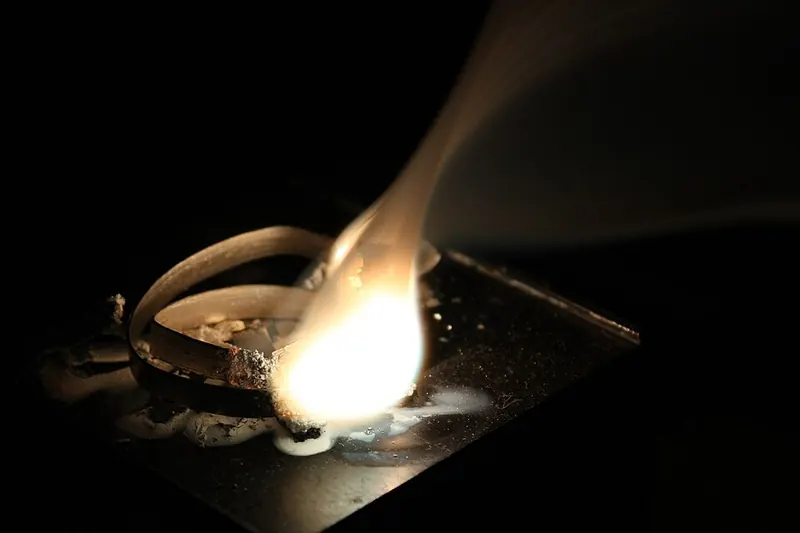
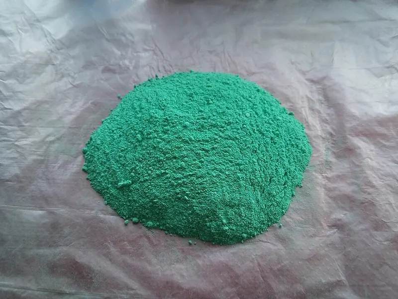

Cambridge Lower Secondary · Science 0893 · Stage 8 · Chemistry
Word Equations, Exothermic and Endothermic Reactions
How to write word equations and name the products, the main reaction patterns, and how to use a temperature change to decide whether a reaction or process is exothermic or endothermic.
British & IGCSE › Checkpoint 8 › Checkpoint 8 Science — Complete Course
- Use word equations to describe chemical reactions. (8Cc.01)
- Know that some processes and reactions are endothermic or exothermic, and that you can tell which by measuring the temperature change. (8Cc.02)
1. Key words
| Word / phrase | Meaning / use |
|---|---|
| reactant | مادة متفاعلة — a substance you start with |
| product | ناتج — a new substance made in the reaction |
| word equation | معادلة لفظية — a reaction written with the names of the substances |
| salt | ملح — a compound made when an acid reacts; e.g. copper sulfate |
| combustion | احتراق — burning a fuel in oxygen |
| exothermic | طارد للحرارة — gives out energy to the surroundings; temperature rises |
| endothermic | ماص للحرارة — takes in energy from the surroundings; temperature falls |
| surroundings | الوسط المحيط — everything around the reaction: the solution, the container, the air, your hand |
| temperature change | التغير في درجة الحرارة — final temperature − starting temperature |
| insulate | يعزل — stop heat moving in or out |
2. Writing a word equation
In a chemical reaction new substances are made. A word equation shows this using names only.
- Write the reactants on the left, joined by +.
- Draw an arrow (→). It means "react to make". Never use an equals sign (=).
- Write the products on the right, joined by +.
- Check: every element in the reactants must also appear somewhere in the products — atoms are not made or destroyed, just rearranged.
In "magnesium + oxygen → magnesium oxide" the elements magnesium and oxygen are on both sides. If you wrote "magnesium + oxygen → magnesium oxide + hydrogen", the hydrogen would come from nowhere — so it must be wrong. This check catches many mistakes.

3. Naming the products
Two elements joined — the metal keeps its name and the non-metal ends in -ide: oxygen → oxide, chlorine → chloride, sulfur → sulfide. So iron + sulfur → iron sulfide; sodium + chlorine → sodium chloride.
Names ending in -ate contain oxygen as well: copper carbonate contains copper, carbon and oxygen; zinc sulfate contains zinc, sulfur and oxygen.
Salts from acids. When an acid reacts, the product called a salt takes its first name from the metal and its second name from the acid:
| Acid | Salt ends in… | Example |
|---|---|---|
| hydrochloric acid | chloride | magnesium + hydrochloric acid → magnesium chloride + hydrogen |
| sulfuric acid | sulfate | zinc + sulfuric acid → zinc sulfate + hydrogen |
| nitric acid | nitrate | copper oxide + nitric acid → copper nitrate + water |
4. Reaction patterns to learn
Most reactions you meet at Stage 8 follow a small number of patterns. Learn the pattern and you can write the word equation for any metal or acid.
| Type of reaction | General word equation | Example |
|---|---|---|
| metal + oxygen | metal + oxygen → metal oxide | copper + oxygen → copper oxide |
| metal + acid | metal + acid → salt + hydrogen | iron + hydrochloric acid → iron chloride + hydrogen |
| reactive metal + water | metal + water → metal hydroxide + hydrogen | calcium + water → calcium hydroxide + hydrogen |
| neutralisation | acid + alkali → salt + water | hydrochloric acid + sodium hydroxide → sodium chloride + water |
| acid + metal oxide | metal oxide + acid → salt + water | copper oxide + sulfuric acid → copper sulfate + water |
| acid + carbonate | carbonate + acid → salt + water + carbon dioxide | calcium carbonate + hydrochloric acid → calcium chloride + water + carbon dioxide |
| combustion of a fuel (a hydrocarbon) | fuel + oxygen → carbon dioxide + water | methane + oxygen → carbon dioxide + water |
| thermal decomposition (breaking down by heating) | carbonate → metal oxide + carbon dioxide | copper carbonate → copper oxide + carbon dioxide |
| aerobic respiration (in cells) | glucose + oxygen → carbon dioxide + water | — |

From a description to an equation. Read the question and underline the substances. Those you start with (or that are added or used up) are reactants; those that are made, formed or given off are products. Air or burning means oxygen is a reactant even if the question does not say it.
المواد المتفاعلة (reactants) على الشمال، والنواتج (products) على اليمين، وبينهم سهم → مش علامة يساوي. أي عنصر موجود في الشمال لازم يكون موجود في اليمين. أسماء الأملاح: hydrochloric ← chloride، sulfuric ← sulfate، nitric ← nitrate. فلز + أكسجين ← أكسيد الفلز. فلز + حمض ← ملح + هيدروجين.
5. Exothermic and endothermic changes
Every chemical reaction involves an energy change. Energy (usually as heat) moves between the chemicals and their surroundings. The surroundings are everything around the reacting particles — the water they are dissolved in, the container, the thermometer, the air, your hand.
| Exothermic | Endothermic | |
|---|---|---|
| Energy | given out to the surroundings | taken in from the surroundings |
| Temperature of the mixture / surroundings | rises (gets hotter) | falls (gets colder) |
| Reactions | burning fuels; respiration; neutralisation; metals with acids; iron rusting (very slowly); iron powder in hand warmers | citric acid + sodium hydrogencarbonate (the cold fizz in sherbet); thermal decomposition (needs heat all the time); photosynthesis (takes in light energy) |
| Processes (no new substance) | condensing; freezing; dissolving some solids, e.g. calcium chloride | melting; evaporating and boiling; dissolving some solids, e.g. ammonium nitrate (used in instant cold packs) |
EXothermic = energy EXits (leaves) → hotter. ENdothermic = energy ENters → colder.
6. Identifying the type from a temperature change
- Measure the starting temperature of the reactants with a thermometer.
- Mix the reactants (stir) and watch the thermometer.
- Record the highest temperature (if it rises) or the lowest temperature (if it falls).
- Work out temperature change = final temperature − starting temperature.
- A rise means exothermic; a fall means endothermic.
Making it accurate and fair: use a polystyrene cup with a lid — polystyrene is a good thermal insulator, so less energy escapes to or comes in from the room. Use the same volume of liquid and the same mass of solid each time, start at the same temperature, and repeat to check your results. Wear eye protection when using acids.
Reading a thermometer: read at eye level and work out what each small division is worth before you read it (for example, if there are 10 divisions between 20 °C and 30 °C, each is 1 °C).
7. Worked examples
Worked example 1 — When sodium burns in chlorine, sodium chloride is made. Write the word equation. [1]
- Reactants (start): sodium and chlorine. Product (made): sodium chloride.
- sodium + chlorine → sodium chloride
- Element check: sodium ✓, chlorine ✓ on both sides.
Worked example 2 — Complete the word equation: magnesium + sulfuric acid → __________ + __________ [2]
- Pattern: metal + acid → salt + hydrogen.
- Salt: metal name magnesium + sulfuric → sulfate = magnesium sulfate (1).
- Other product: hydrogen (1).
- Common mistake: "magnesium sulfuric" or "magnesium sulfide". Sulfuric acid always gives a sulfate.
Worked example 3 — Copper carbonate is a green powder. When it is heated it turns black (copper oxide) and a gas that turns limewater milky is given off. Write the word equation. [2]
- The gas that turns limewater milky is carbon dioxide.
- copper carbonate → copper oxide + carbon dioxide (1 for the reactant, 1 for both products).
- Only one reactant here: heat is the condition, not a substance, so it is not written as a reactant (you may write "heat" above the arrow).
Worked example 4 — A student adds sodium hydroxide solution to hydrochloric acid. The temperature goes from 22 °C to 31 °C. (a) Calculate the temperature change. [1] (b) Is the reaction exothermic or endothermic? Explain. [2]
- (a) 31 − 22 = 9 °C (a rise).
- (b) Exothermic (1) — the temperature rose, so energy was given out to the surroundings (1).
- Common mistake: writing "the reaction took in heat so it got hotter". Getting hotter means energy came out of the reacting chemicals.
Worked example 5 — Ammonium nitrate dissolves in water. The temperature falls from 20 °C to 13 °C. (a) Is dissolving ammonium nitrate exothermic or endothermic? [1] (b) Suggest a use for this. [1] (c) Why is it called a process here, not a reaction? [1]
- (a) Endothermic — the temperature fell by 7 °C.
- (b) An instant cold pack for sports injuries.
- (c) Dissolving is a physical change: no new substance is made (the solid can be got back by evaporating the water).
Worked example 6 — Mariam tests four solids dissolving in water. Her results are in the table. Which solids dissolve exothermically? [2]
| Solid | Start temperature (°C) | Final temperature (°C) |
|---|---|---|
| A | 21 | 28 |
| B | 21 | 17 |
| C | 20 | 20 |
| D | 22 | 35 |
- Work out each change: A +7, B −4, C 0, D +13.
- Rises = exothermic: A and D (1 mark each).
- C shows no change — neither exothermic nor endothermic (or too small to measure).
- Using "=" instead of "→", or writing "and" instead of "+".
- Forgetting oxygen as a reactant when something burns.
- Writing "heat" as a reactant or product — heat is energy, not a substance.
- Naming salts wrongly: sulfuric → sulfate, hydrochloric → chloride, nitric → nitrate.
- Getting exothermic and endothermic backwards: exothermic feels hot because energy is given out to you.
- Subtracting the wrong way and giving a negative "rise". Say clearly whether the temperature rose or fell, and by how much.
- Complete a word equation with one or two missing names.
- Write a full word equation from a description (reactants, arrow, products).
- Read thermometers before and after, calculate the change and state exothermic or endothermic with a reason.
- Read a temperature–time graph: lowest/highest temperature, size of the change.
- Classify processes (melting, freezing, burning, dissolving) as exothermic or endothermic.
- Plan a fair test: polystyrene cup, measured volumes and masses, starting temperature, repeat.
Practice
- Word equation: reactants → products, with + between substances and an arrow, never =.
- Patterns: metal + oxygen → metal oxide; metal + acid → salt + hydrogen; carbonate + acid → salt + water + carbon dioxide; fuel + oxygen → carbon dioxide + water.
- Salt names: chloride (hydrochloric), sulfate (sulfuric), nitrate (nitric).
- Exothermic: energy given out, temperature rises. Endothermic: energy taken in, temperature falls.
- Temperature change = final − starting temperature; use an insulated cup and repeat for reliable results.
All pages in this course
Start here
- Stage 8 Science: The Tests and How to Prepare
- Thinking and Working Scientifically: Models, Investigations and Analysing Results
Biology
- Joints and Antagonistic Muscles
- Blood and Its Components
- Breathing, Gas Exchange and Diffusion in the Lungs
- A Balanced Diet, Energy Stores and Lifestyle
- Aerobic Respiration
- Ecosystems, Bioaccumulation and Invasive Species
Chemistry
- The Structure of the Atom
- Purity, Concentration and Chromatography
- Word Equations, Exothermic and Endothermic Reactions
- The Reactivity of Metals
- Impure Products and Solubility of Salts
Physics
- Speed and Distance–Time Graphs
- Balanced and Unbalanced Forces, and Moments
- Pressure, Particles and Diffusion
- Reflection and Refraction
- Dispersion and Colour
- Magnetic Fields and Electromagnets
Earth and space
- The Earth's Magnetic Field and Earth's Resources
- Climate, Weather and Climate Change
- Galaxies and Asteroids
Practice tests